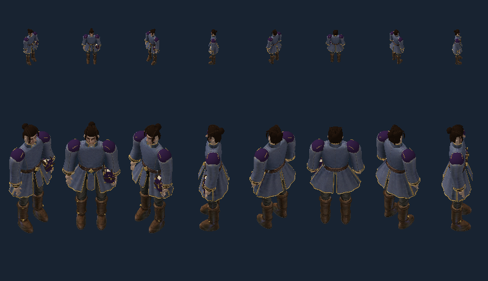

Sparse geometry/gear transfer probe. Refer to report for complete288case/depth verdict. Full painted art, animation inventory, world lighting and production performance remain unqualified.
Existing Pixi harness; Godot remains shipping target. Upper50px / lower150px body axis; eight actual directions. Textures and source geometry preserved.

Report · 288measurements · Receipt · Previous failed RGBA method